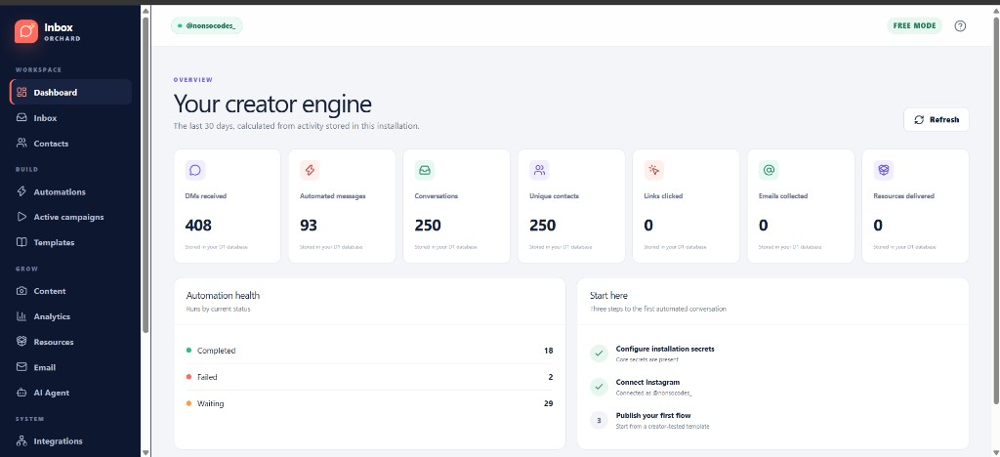
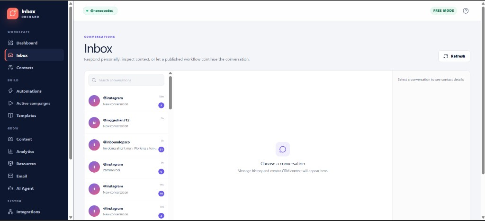
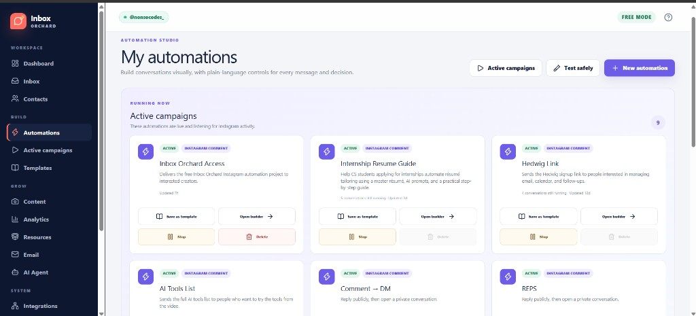

Summary
Inbox Orchard turns eligible Instagram comments and inbound messages into durable conversations, tracked resource deliveries, lightweight CRM records, email subscribers, and measurable conversions. I designed it with a visual workflow builder, reusable campaign templates, contact management, analytics, email integrations, safe testing, and duplicate-message protection. It is self-hosted on Cloudflare and uses official Meta APIs only — there is no central Inbox Orchard service — so creators keep control of audience, data, and costs.
My role and contribution
I own the product direction and repository. Development is AI-assisted under my guidance (planning, scaffolding, and iteration). I define the creator workflows, integrate Meta and provider APIs, and verify the dashboard, inbox, and automation studio by hand as features land.
Status
Open-source and publicly demoable at inboxorchard.vercel.app. The core application, mock mode, workflow engine, inbox, CRM, resources, email queue, integrations, analytics, and administration UI are implemented. Real Meta, Resend, Gmail, Brevo, Google Sheets, and remote Cloudflare behaviour must be verified with each deployer’s own credentials.
Technology
React, TypeScript, Hono, Cloudflare Workers, D1, Queues, R2, Workers AI, and Meta APIs.
Problem
Creators lose leads when comments, Story replies, and keyword DMs pile up without a reliable follow-up path. Commercial automation tools can be expensive and keep audience data on someone else’s stack. Inbox Orchard gives creators a self-hosted alternative that still supports visual workflows, templates, CRM, and email delivery.
User workflow
- Connect an Instagram Professional account (or explore safely in FREE / mock mode).
- Build or start from a template in the visual automation studio.
- Publish flows that listen for comments, Story replies, keyword DMs, and related triggers.
- Review conversations in Inbox, manage contacts, and deliver tracked resources.
- Collect emails through Resend, Brevo, Gmail, or mock delivery, and watch analytics on the dashboard.
What I personally built
- Product direction for the Instagram-first automation workflow end to end.
- Guided AI-assisted implementation of dashboard, inbox, contacts, automations, templates, analytics, and integrations.
- Architecture around signed webhooks, durable queue processing, duplicate-run protection, and self-hosted Cloudflare ownership.
- Manual verification of FREE MODE, active campaigns, and the conversation inbox as features ship.
Architecture or data flow
Instagram → signed webhook → D1 event record → Cloudflare Queue → Hono Worker automation engine → policy layer and provider adapters. The browser SPA talks to the Worker for inbox, CRM, resources, email, and analytics. Durable run state lives in D1; uploads and tracked assets use R2; optional Workers AI handles intent classification and workflow assistance. Each installation owns its Cloudflare account, credentials, database, queue, files, and provider accounts.
Screenshots
{kind=link}

{kind=link}

{kind=link}

AI-assisted development
Built with substantial AI assistance under my direction. I set requirements, review and test flows, and keep iterating on the dashboard, inbox, and automation studio paths listed above.
Known limitations
- Self-hosted: real Instagram automation requires each owner’s Meta app approval and credentials.
- Provider integrations (Meta, email, Sheets, remote Cloudflare) must be verified per installation.
- FREE / mock mode is designed for safe exploration and cannot call Instagram.
Next improvements
Deepen verification notes for live Meta webhook paths, expand portable templates, and keep hardening failure visibility and replay for production deployments.
Demo, repository, screenshots, and tests
- Demo: inboxorchard.vercel.app
- Repository: github.com/danekweaga/inboxorchard
- Screenshots: Dashboard, Inbox, and My automations above